Using environmental big data to understand, manage, and design ecosystems
Matthew Ross
03/08/2021
Motivation and Roadmap
The point is that if we are going to design ecosystems (and we continually do so whether we care to face all of the implications or not) then it will be best to design them intentionally, making use of all the ecological understanding we can bring to bear…
– Jon Tillman Lyle, 1985
Acknowledgments

Acknowledgments
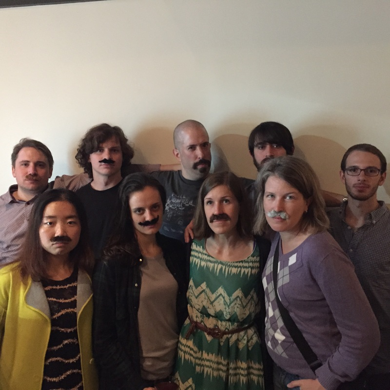
Roadmap
- Mountaintop Mining (local, sensors)
- Deeper, flatter
- Slower, saltier
- Not recovery, novelty
- Remote sensing, democratizing data (global, open)
- Dissonance to harmony
- Science along (not in) rivers
- Small, clearer lakes
- Putting all this data to work (macroscale, infrastructure)
- Beyond bespoke watershed ecosystem studies
- What do water suppliers need to know about their watershed?
- Using big environmental data for environmental justice
Mountaintop Mining
Deeper, flatter
How does mountaintop mining physically alter the landscape?
Deeper, flatter
How does mountaintop mining physically alter the landscape?
Deeper, flatter
Mountaintop mining deposited 6.4 km3 of spoil into headwater valley fills, lowering mined landscape slopes by 10º.
Slower, saltier
How do these physical changes lead to changes in downstream hydrology and biogeochemistry?
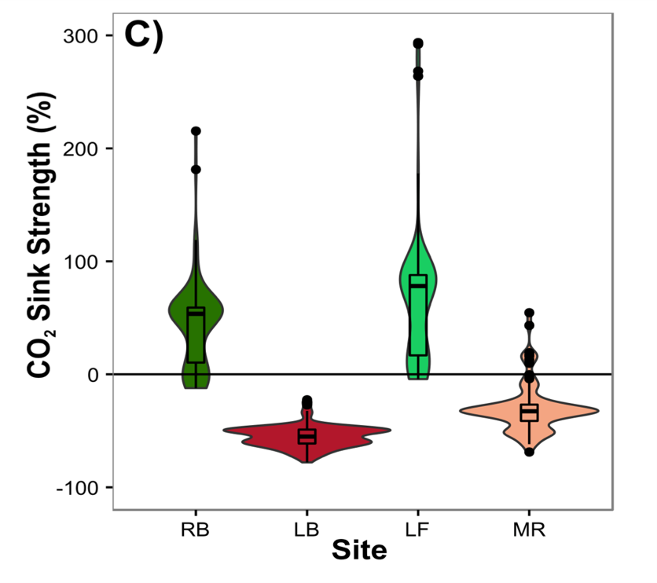
Slower, saltier
How do these physical changes lead to changes in downstream hydrology and biogeochemistry?
Slower, saltier
Water stored in valley fills reacts with pyrite & generates a 45-fold increase in dissolved ion flux and a net geologic C release in mined watersheds.
Not recovery, novelty
How long will these impacts last?
SMCRA


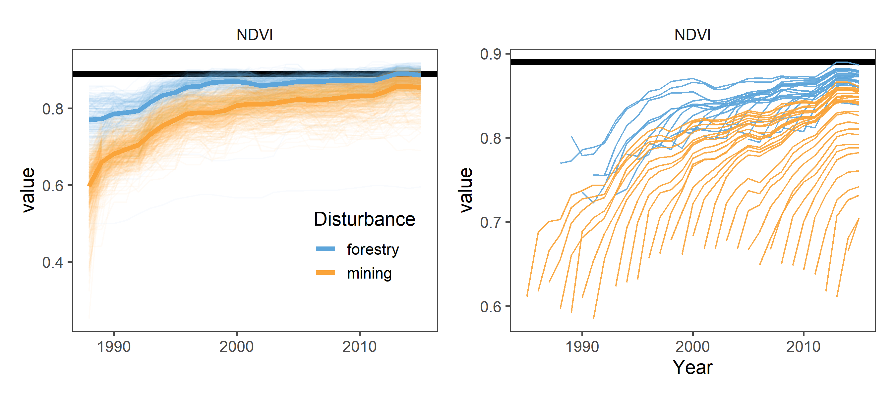
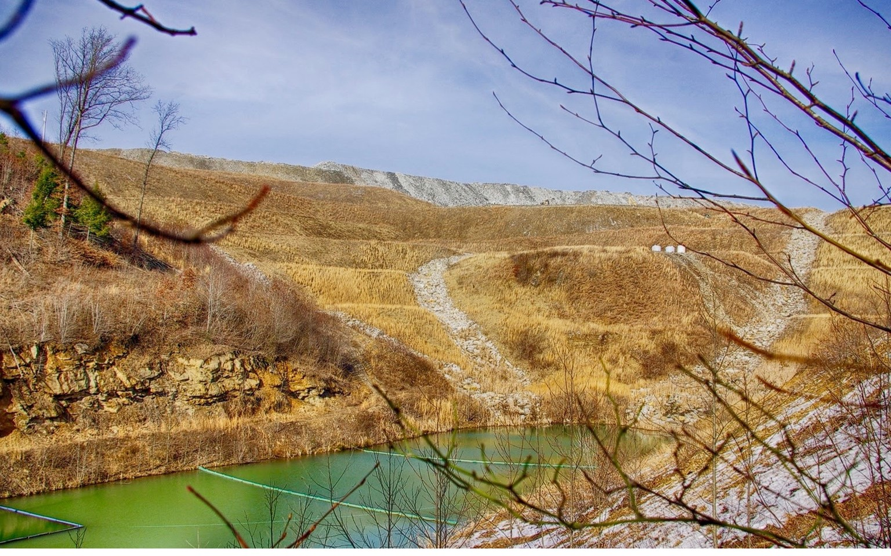
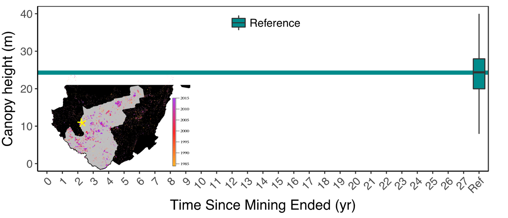

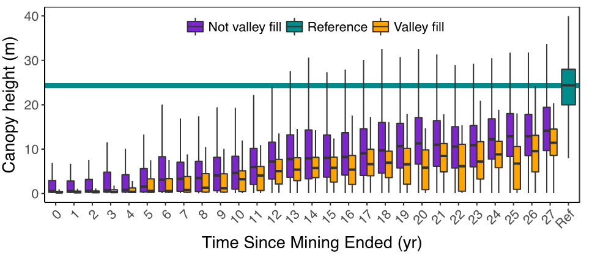
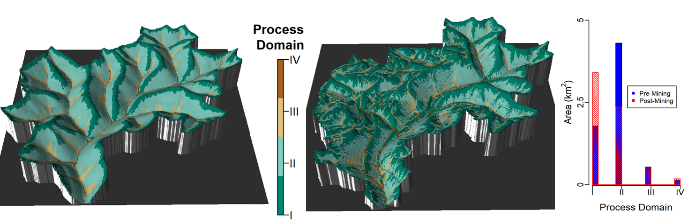
- Savannah vegetation (> 35 years)
- Baseflow dominance (> 25 years)
- Elevated weathering (> 30 years)
- Geomorphic changes (> 10,000 years)
Not recovery, novelty
Mined landscapes and the streams that drain them are novel ecosystems, unlikely to return to their previous conditions over human timescales.
Mountaintop mining
Remote sensing, democratizing data


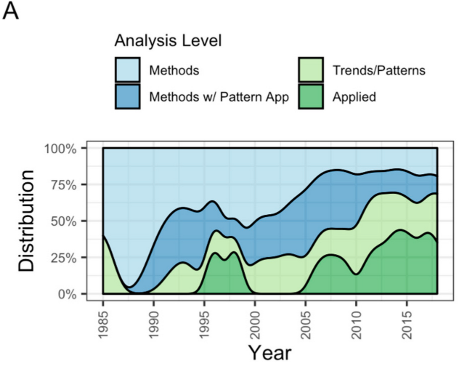
Dissonance to harmony
Science along (not in) rivers
How are America’s rivers changing color?
What are the dominant controls of sediment in the Colorado River?
Work with Matt Cohen and Jim Jawitz

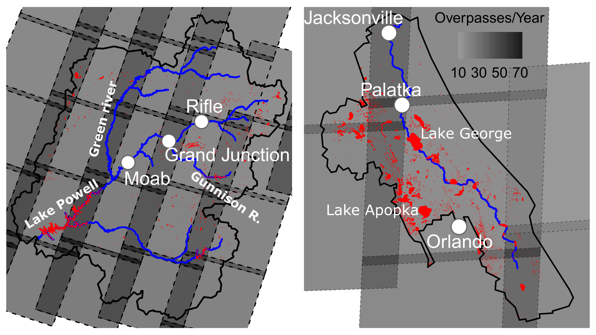

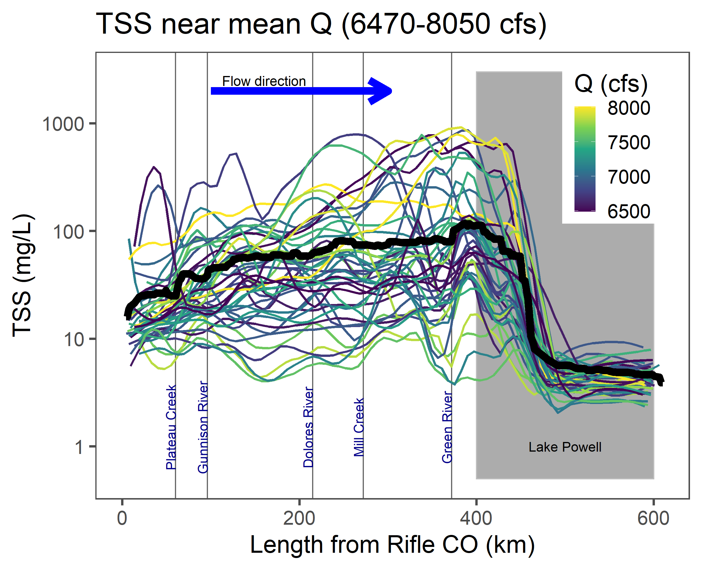
How have macrophytes come to dominate the Loire river?
Work with Gilles Pinay, Florentina Moatar, Jake Diamond, Matt Cohen, John Gardner

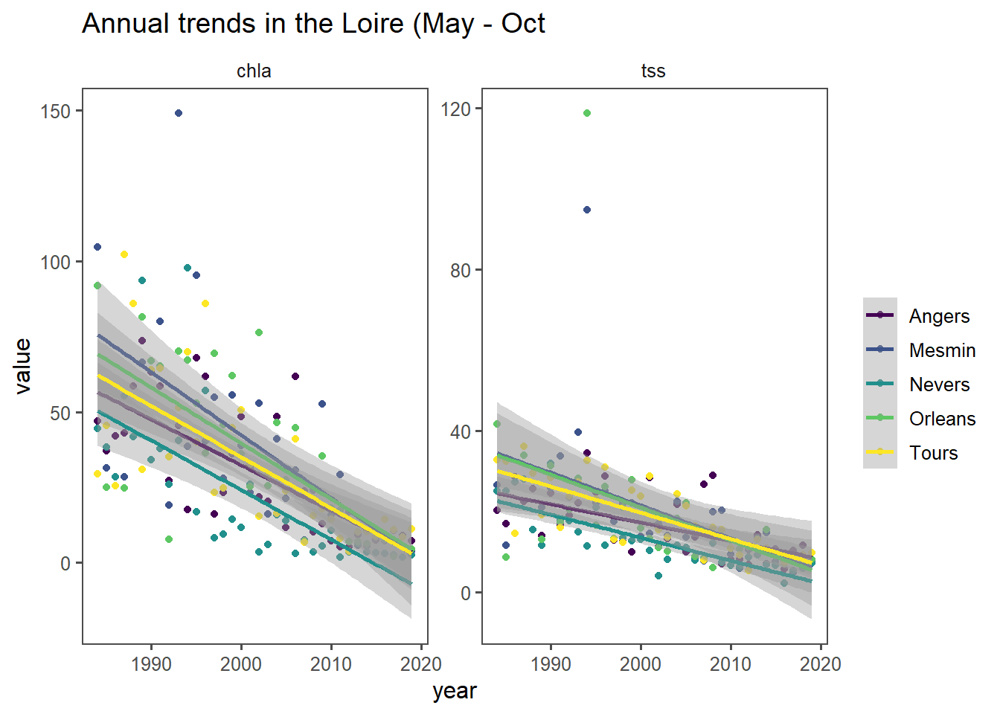
Smaller, clearer lakes
Lead by Simon Topp, UNC Chapel Hill


Putting all this data to work
Beyond bespoke watershed ecosystem studies
What do water suppliers need to know about their watershed?
Using big environmental data for environmental justice
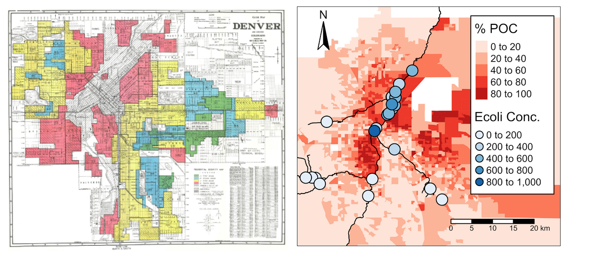
Conclusions
Original motivation
The point is that if we are going to design ecosystems (and we continually do so whether we care to face all of the implications or not) then it will be best to design them intentionally, making use of all the ecological understanding we can bring to bear…
– Jon Tillman Lyle, 1985
Current motivation
- Open science: one term, five purposes Fecher and Friesike 2014
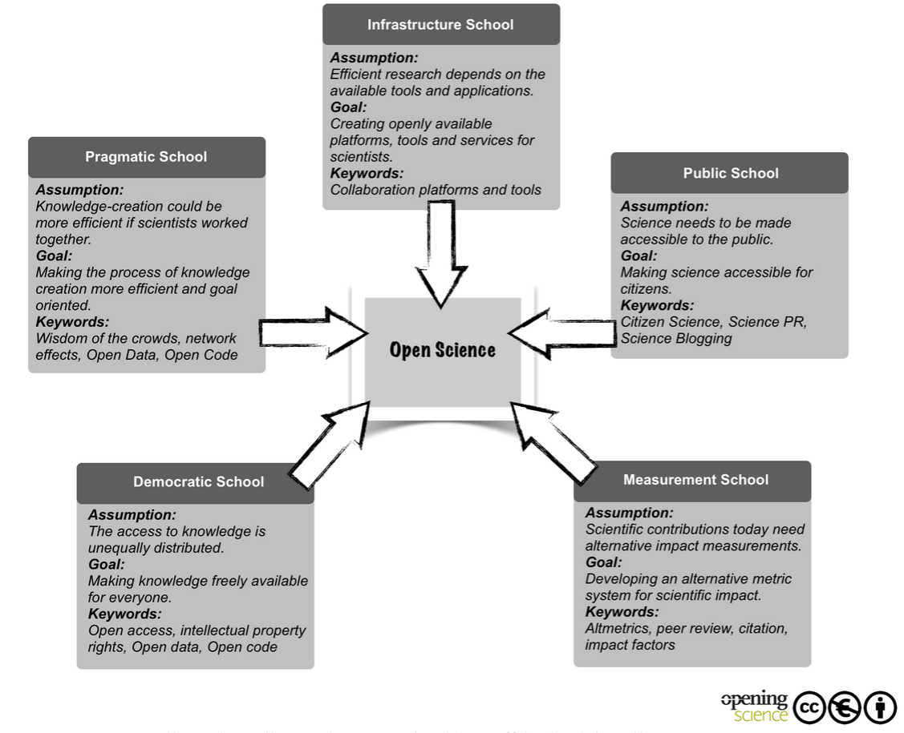